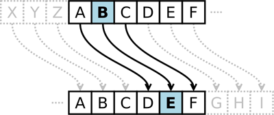
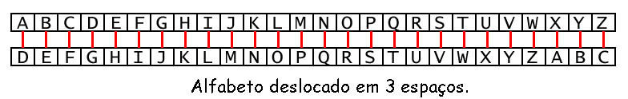

chr() e ord()
isalpha()
isupper() e islower()
O programa deste capítulo não é bem um jogo, mas é divertido da mesma forma. Nosso programa irá converter texto escrito em Português para um código secreto, e também irá fazer o inverso, converter códigos secretos de volta para Português. Somente alguém com bons conhecimentos sobre códigos secretos será capaz de entender nossas mensagens secretas.
Como nosso programa irá manipular texto visando convertê-lo em mensagens secretas, nós iremos conhecer várias funções e métodos que Python fornece para manipulação de Strings. Nós também iremos aprender como os programas podem executar operações matemáticas com strings assim como se faz com números.
A ciência de escrever códigos secretos é chamada criptografia. Criptografia tem sido usada por centenas de anos para envio de mensagens secretas, de forma que apenas o destinatário destas possa compreendê-las, mesmo que alguém capture o mensageiro e leia a mensagem codificada. Um sistema de código secreto é também chamado de cifra. Existem milhares de cifras diferentes que tem sido utilizadas, sendo que cada uma delas utiliza diferentes técnicas para manter as mensagens em segredo.
Em criptografia, nós chamamos a mensagem que queremos que se torne secreta de texto puro. A mensagem em texto puro poderia ser algo como o seguinte:
Alô pessoal! As chaves para a minha casa estão escondidas debaixo do vaso de flores vermelho.
Quando convertemos o texto puro em uma mensagem codificada, nós chamamos essa operação de encriptar o texto puro. O texto puro é encriptado, gerando o texto cifrado. O texto cifrado se parece com um conjunto de letras aleatórias (também chamado de garbage data - lixo), de forma que nós não conseguimos descobrir o texto puro original apenas olhando o texto cifrado. Segue um exemplo de um texto cifrado:
Ckkz fkx kj becqnejc kqp pdeo oaynap iaoowca!
Porém, se nós conhecermos a cifra utilizada para encriptar a mensagem, então nós poderemos decriptar o texto cifrado de volta para texto puro (decriptar é o oposto de encriptar).
Muitas cifras também utilizam chaves. Chaves são valores secretos que permitem que você decripte o texto que foi encriptado usando uma cifra específica. Pense na cifra como sendo uma fechadura. Apesar de todas as fechaduras do mesmo tipo serem construídas da mesma forma, você somente conseguirá destravar uma fechadura se você possuir a chave construída para aquela tranca.
Quando encriptamos uma mensagem usando uma cifra, escolhemos a chave que será utilizada para encriptar e decriptar uma mensagem. Em nosso programa de Cifra de Caesar, a chave será um número de 1 a 26. A menos que você conheça a chave (isto é, conheça o número), você não será capaz de decriptar a mensagem encriptada.
 Figura 14-1: Deslocando letras por três espaços. Nesse caso, B se torna E.
A Cifra de Caesar foi uma das primeiras cifras inventadas. Nessa cifra, você encripta a mensagem pegando cada letra do alfabeto (em criptografia, essas letras são chamadas de símbolos porque podem ser letras, números ou quaisquer outros símbolos) e substituindo pela letra "deslocada". Se você desloca a letra A por um espaço, você obtém a letra B. Se você desloca a letra A por dois espaços, você obtém a letra C. A Figura 14-1 mostra algumas letras sendo deslocadas em 3 espaços.
Para obter cada letra deslocada, desenhe uma linha composta por divisões com cada letra do alfabeto ocupando uma divisão. Então, desenhe uma segunda linha com divisões exatamente abaixo desta, mas inicie o alfabeto com um certo número de espaços deslocados. Quando você terminar o alfabeto na linha de baixo, preencha o restante com as letras que precedem a primeira letra do alfabeto deslocado no alfabeto tradicional. Segue um exemplo com as letras deslocadas em três espaços:
 Figura 14-2: O alfabeto inteiro deslocado por três espaços.
O número de espaços que nós deslocamos é a chave da Cifra de Caesar. O exemplo acima mostra a tradução de cada letra, usando a chave 3.
Usando uma chave de 3, se encriptarmos o texto puro "Beleza", então o "B" se torna "E". A letra "e" se torna "h". A letra "l" se torna "o". A letra "e" se torna "h". A letra "z" se torna "c". Por fim, a letra "a" se torna "d". O texto cifrado de "Beleza" com chave 3 se torna: "Ehohcd".
Os caracteres que não representam letras serão mantidos inalterados na frase. Para decriptar "Ehohcd" com chave 3, basta fazer o processo inverso, da linha de baixo para a de cima. A letra "E" se torna "B". A letra "h" se torna "e". A letra "o" se torna "l". A letra "h" se torna "e". A letra "c" se torna "z". Por fim, a letra "d" se torna "a", formando novamente a palavra "Beleza".
Você pode encontrar mais sobre a Cifra de Caesar na Wikipedia, em: [http://pt.wikipedia.org/wiki/Cifra_de_César http://pt.wikipedia.org/wiki/Cifra_de_César]
Como vamos implementar esse deslocamento de letras em nosso programa? Nós podemos fazer isso representando cada letra como um número (chamado de ordinal), e então adicionar ou subtrair valores desse número para formar um novo número (e, por consequência, uma nova letra). ASCII (que é pronunciado "asqui" e que significa American Standard Code for Information Interchange) é um código que cria uma correspondência entre cada caractere e um número entre 32 e 127. Os números menores que 32 se referem a caracteres "não-imprimíveis", então não iremos usá-los.
As letras maiúsculas de "A" até "Z" possuem o código ASCII de 65 até 90. As letras minúsculas de "a" até "z" são representadas pelos códigos ASCII de 97 até 122. Os caracteres que representam os dígitos númericos de "0" até "9" possuem os números ASCII de 48 até 57.
Tabela 14-1. A Tabela ASCII
| 32 (espaço) | 48 0 | 64 @ | 80 P | 96 ` | 112 p |
| 33 ! | 49 1 | 65 A | 81 Q | 97 a | 113 q |
| 34 " | 50 2 | 66 B | 82 R | 98 b | 114 r |
| 35 # | 51 3 | 67 C | 83 S | 99 c | 115 s |
| 36 $ | 52 4 | 68 D | 84 T | 100 d | 116 t |
| 37 % | 53 5 | 69 E | 85 U | 101 e | 117 u |
| 38 & | 54 6 | 70 F | 86 V | 102 f | 118 v |
| 39 ' | 55 7 | 71 G | 87 W | 103 g | 119 w |
| 40 ( | 56 8 | 72 H | 88 X | 104 h | 120 x |
| 41 ) | 57 9 | 73 I | 89 Y | 105 i | 121 y |
| 42 * | 58 : | 74 J | 90 Z | 106 j | 122 z |
| 43 + | 59 ; | 75 K | 91 [ | 107 k | 123 { |
| 44 , | 60 < | 76 L | 92 \ | 108 l | 124 |
| 45 - | 61 = | 77 M | 93 ] | 109 m | 125 } |
| 46 . | 62 > | 78 N | 94 ^ | 110 n | 126 ~ |
| 47 / | 63 ? | 79 O | 95 _ | 111 o | 127 |
Então, se quiséssemos deslocar "A" por três espaços, primeiro devemos
convertê-lo para um número (65). Então, adicionamos 3 a 65, obtendo 68. Então,
convertemos o número 68 de volta para letra ("D"). Nós iremos utilizar as
funções chr() e ord() para converter entre letras e números.
Por exemplo, a letra "A" é representada pelo número 65. A letra "m" é representada pelo número 109. A tabela com todos os códigos ASCII de 32 a 126 é apresentada na Tabela 14-1.
A função chr() (pronunciamos "char", de "character") recebe como parâmetro
um número inteiro representando um código ASCII e retorna uma string contendo
um único caractere. A função ord() recebe como parâmetro uma string contendo
um único caractere, e retorna o número inteiro que representa o código ASCII
para aquele caractere. Experimente digitar o seguinte código no console interativo:
>>> chr(65)
'A'
>>> ord('A')
65
>>> chr(65+8)
'I'
>>> chr(52)
'4'
>>> chr(ord('F'))
'F'
>>> ord(chr(68))
68
>>>
Na terceira linha de comando, chr(65+8) é interpretado como chr(73). Se você
olhar na tabela ASCII, você verá que 73 é o número ordinal para a letra "I". Na
quinta linha, chr(ord('F')) é interpretado como chr(70), que é interpretado como
"F". Alimentando a função chr() com o resultado de ord() irá resultar no
mesmo que o argumento original. O mesmo acontece se alimentarmos a função
ord() com o resultado de chr(), como mostrado pela sexta linha de
comando.
As funções chr() e ord() vem bem a calhar em nosso programa de Cifra de
Caesar. Elas também são muito úteis quando precisamos converter strings
para números e números para strings.
Aqui segue um exemplo de execução do programa de Cifra de Caesar, encriptando uma mensagem:
Você deseja encriptar ou decriptar uma mensagem? encriptar Digite sua mensagem: O ceu por cima do porto tinha a cor de uma TV que saiu do ar. Entre um número de chave: (1-26) 13 Seu texto traduzido é: B prh cbe pvzn qb cbegb gvaun n pbe qr hzn GI dhr fnvh qb ne.
Agora iremos executar o programa e decriptar o texto que recém encriptamos.
Você deseja encriptar ou decriptar uma mensagem? decriptar Digite sua mensagem: B prh cbe pvzn qb cbegb gvaun n pbe qr hzn GI dhr fnvh qb ne. Entre um número de chave: (1-26) 13 Seu texto traduzido é: O ceu por cima do porto tinha a cor de uma TV que saiu do ar.
Na próxima execução, vamos tentar decriptar o texto recém encriptado, mas iremos utilizar uma chave incorreta. Lembre que se você não conhece a chave correta, o texto decriptado será irreconhecível.
Você deseja encriptar ou decriptar uma mensagem? decriptar Digite sua mensagem: B prh cbe pvzn qb cbegb gvaun n pbe qr hzn GI dhr fnvh qb ne. Entre um número de chave: (1-26) 15 Seu texto traduzido é: Q egw rqt ekoc fq rqtvq vkpjc c eqt fg woc VX swg uckw fq ct.
Aqui está o código-fonte para o programa da Cifra de Caesar. Se não quiser
digitar todo esse código, você pode visitar o website do livro na URL
http://inventwithpython.com/chapter14 e seguir as instruções para baixar o código-fonte. Após digitar o código, salve o
arquivo como cifra.py.
1 # Cifra de Caesar
2 MAX_KEY_SIZE = 26
3 def getMode():
4 while True:
5 print('Você deseja encriptar ou decriptar uma mensagem?')
6 mode = input().lower()
7 if mode in 'encriptar e decriptar d'.split():
8 return mode
9 else:
10 print('Digite "encriptar" ou "c" ou "decriptar" ou "d".')
11 def getMessage():
12 print('Digite sua mensagem:')
13 return input()
14 def getKey():
15 key = 0
16 while True:
17 print('Digite o número da chave (1-%s)' % (MAX_KEY_SIZE))
18 key = int(input())
19 if (key >= 1 and key <= MAX_KEY_SIZE):
20 return key
21 def getTranslatedMessage(mode, message, key):
22 if mode[0] == 'd':
23 key = -key
24 translated = ''
25 for symbol in message:
26 if symbol.isalpha():
27 num = ord(symbol)
28 num += key
29 if symbol.isupper():
30 if num > ord('Z'):
31 num -= 26
32 elif num < ord('A'):
33 num += 26
34 elif symbol.islower():
35 if num > ord('z'):
36 num -= 26
37 elif num < ord('a'):
38 num += 26
39 translated += chr(num)
40 else:
41 translated += symbol
42 return translated
43 mode = getMode()
44 message = getMessage()
45 key = getKey()
46 print('Seu texto traduzido é:')
47 print(getTranslatedMessage(mode, message, key))
Este código é bem mais curto do que os códigos dos nossos outros jogos. Os processos de encriptar e decriptar são o inverso um do outro, e compartilham muito do mesmo código. Vamos ver o funcionamento do código, linha por linha:
1 # Cifra de Caesar
2 MAX_KEY_SIZE = 26
A primeira linha é um simples comentário. A Cifra de Caesar pertence a um tipo de cifras chamado de cifras de substituição simples. Cifras de substituição simples são cifras que substituem um símbolo no texto puro por um (e apenas um) símbolo no texto cifrado. Assim, se um "G" foi substituído por um "Z" na cifra, todo e qualquer "G" no texto puro deverá ser substituído por um "Z" na cifra.
MAX_KEY_SIZE é uma variável que armazena o número inteiro 26. MAX_KEY_SIZE nos lembra que a chave usada em nossa cifra deverá ser um número entre 1 e 26.
3 def getMode():
4 while True:
5 print('Você deseja encriptar ou decriptar uma mensagem?')
6 mode = input().lower()
7 if mode in 'encriptar e decriptar d'.split():
8 return mode
9 else:
10 print('Digite "encriptar" ou "c" ou "decriptar" ou "d".')
A função getMode() irá permitir ao usuário que informe se deseja encriptar ou decriptar a mensagem. O valor de retorno de input() (que tem uma
chamada ao método lower() em si próprio, retornando assim a versão em
minúsculas da string digitada pelo usuário) é armazenado em mode. A cláusula
condicional if verifica se a string armazenada em mode existe na lista
retornada por 'encriptar e decriptar d'.split(). A lista retornada é
literalmente ['encriptar', 'e', 'decriptar', 'd'], mas é mais fácil
para o programador digitar apenas 'encriptar e decriptar d'.split() ao invés de digitar
todas aquelas aspas e vírgulas. Mas, você pode escolher e utilizar o que for mais
fácil para você, pois ambas são avaliadas como a mesma lista.
Essa função irá retornar o primeiro caractere em mode, visto que mode é
igual a 'encriptar', 'e', 'decriptar', ou 'd'. Isso
significa que getMode() irá retornar a string 'e' ou a string 'd'.
11 def getMessage():
12 print('Digite sua mensagem:')
13 return input()
A função getMessage() simplesmente obtém do usuário a mensagem a ser
encriptada ou decriptada e utiliza essa string como valor de retorno.
14 def getKey():
15 key = 0
16 while True:
17 print('Digite o número da chave (1-%s)' % (MAX_KEY_SIZE))
18 key = int(input())
19 if (key >= 1 and key <= MAX_KEY_SIZE):
20 return key
A função getKey() permite ao usuário digitar a chave que irá utilizar
para encriptar ou decriptar a mensagem. O laço while garante
que a função somente irá retornar uma chave válida. Uma chave válida é uma
chave cujo valor esteja entre os valores inteiros 1 e 26 (lembre que
MAX_KEY_SIZE irá conter somente o valor 26, pois é uma constante). A função
retorna então essa chave. Perceba que, na linha 18, o valor da chave digitada
pelo usuário foi convertida para o valor inteiro para ser armazenada. Assim,
getKey() retorna um inteiro.
21 def getTranslatedMessage(mode, message, key):
22 if mode[0] == 'd':
23 key = -key
24 translated = ''
getTranslatedMessage() é a função que faz a encriptação e a
decriptação em nosso programa. Ela recebe três parâmetros. A variável mode
configura a função para o modo de encriptação ou para o modo de decriptação.
message é o texto puro (ou texto cifrado) a ser encriptado (ou
decriptado). key é a chave que será utilizada para essa cifra.
A primeira linha na função getTranslatedMessage() verifica se nós estamos
em modo encriptação ou em modo decriptação. Se a primeira letra na variável
mode for a string 'd', então estamos no modo de decriptação. A
única diferença entre os dois modos é que no modo de decriptação, a chave
é gravada como um valor negativo de si próprio. Se a chave for o inteiro 22, no
modo de decriptação nós alteramos esse valor para -22. O porquê disso será
explicada posteriormente.
translated é uma string que irá armazenar o resultado final: seja o texto
cifrado (se estivermos encriptando) ou o texto puro (se estivemos
decriptando). Nessa variável iremos concatenar strings, por isso
inicialmente armazenamos nela uma string vazia. (Uma variável deve ser definida
com algum valor de string antes que possamos concatenar outra string a ela.)
O método isalpha() irá retornar True se a string testada for uma letra maiúscula
ou minúscula de A a Z. Se a string contiver quaisquer caracteres que não
forem letras, a função isalpha() irá retornar False. Experimente digitar
os seguintes comandos no console interativo:
>>> 'Ola'.isalpha() True >>> 'Quarenta e dois'.isalpha() False >>> 'Quarentaedois'.isalpha() True >>> '42'.isalpha() False >>> ''.isalpha() False >>>
Como você pode ver, 'Quarenta e dois'.isalpha() irá retornar False
porque 'Quarenta e dois' possui espaços, que são caracteres que não são
letras. '42'.isalpha() retorna False porque tanto '4' quanto '2'
são caracteres que não representam letras. E ''.isalpha() retorna False
porque isalpha() somente retorna True quando a string possuir somente letras
e se tal string não for vazia.
Nós iremos utilizar o método isalpha() em nosso programa nas próximas linhas.
25 for symbol in message:
26 if symbol.isalpha():
27 num = ord(symbol)
28 num += key
O laço de repetição for da linha 25 itera sobre cada letra (lembre que em
criptografia as chamamos de símbolos) na string armazenada em message. Em um laço for,
as strings são tratadas como se fossem listas de caracteres, com um caractere
por posição. Se message possui a string 'Ola' como conteúdo, então
for symbol in 'Ola' seria o mesmo que for symbol in ['O', 'l', 'a']. Em
cada repetição através desse laço, a variável symbol terá o valor de uma
das letras contidas em message.
A cláusula condicional if é utilizada na linha 26, porque nós iremos
encriptar ou decriptar somente letras na mensagem. Números, sinais, pontuação e todo
o resto irá permanecer em sua forma não traduzida. A variável num irá
armazenar o valor inteiro da letra armazenada em symbol. A linha 28
"desloca" o valor de num em key espaços.
Os métodos isupper() e islower() da classe string (presentes nas linhas
29 e 34) funcionam de forma similar aos métodos isdigit() e isalpha().
isupper() irá retornar True se a string sobre a qual ela foi chamada
contém ao menos uma letra maiúscula e nenhuma letra minúscula. islower() irá
retornar True se a string sobre a qual ela foi chamada contém ao menos uma
letra minúscula e nenhuma letra maiúscula. Caso contrário, ambos os métodos
retornam False. A existência de caracteres como números e espaços na string
não afeta o resultado. Strings que não contenham letra alguma, incluindo as
strings vazias, irão também retornar False. Experimente digitar o seguinte
em um console interativo:
>>> 'OLA'.isupper()
True
>>> 'ola'.isupper()
False
>>> 'ola'.islower()
True
>>> 'Ola'.islower()
False
>>> 'FIQUE ATENTO!'.isupper()
True
>>> '42'.isupper()
False
>>> '42'.islower()
False
>>> ''.isupper()
False
>>> ''.islower()
False
>>>
O processo de encriptar (ou decriptar) cada letra é bastante simples. Nós queremos aplicar o mesmo código Python para todas as letras da string, que é o que as próximas linhas de código fazem.
29 if symbol.isupper():
30 if num > ord('Z'):
31 num -= 26
32 elif num < ord('A'):
33 num += 26
O código acima verifica se o símbolo contido em symbol é uma letra
maiúscula. Se for, existem dois casos especiais com os quais nós devemos nos
preocupar. O que acontece se o valor de symbol for 'z' e a chave for 4?
Se esse fosse o caso, o valor de num passaria a ser '^' (o código ASCII de
'^' é 94). Mas, '^' sequer é uma letra. O que queremos é que, ao chegar
ao final do alfabeto, o programa retorne ao início deste (ou seja, que após a letra 'z' venha a letra 'a' e que após a letra 'Z' venha a letra 'A' novamente).
Podemos fazer isso checando se a chave possui um valor maior do que
o maior código de letra maiúscula na tabela ASCII (que corresponde à letra "Z"). Se for,
então iremos subtrair 26 da variável num (pois existem 26 letras no total). Após fazer isso, o valor de num passa a ser 68, que é o código ASCII para 'D'.
34 elif symbol.islower():
35 if num > ord('z'):
36 num -= 26
37 elif num < ord('a'):
38 num += 26
Se o símbolo contido na variável symbol for uma letra minúscula, o programa
executa um código muito similar às linhas 29 a 33; A única diferença é que
utilizamos ord('z') e ord(a) ao invés de ord('Z') e ord('A').
Se estivéssemos em modo de decriptação, a chave seria negativa. Então, nós
teríamos o caso especial no qual num -= 26 seria menor que o menor valor
possível (que é ord('A'), isto é, 65). Se for esse o caso, nós iremos
adicionar 26 a num para darmos a volta para o fim do alfabeto.
39 translated += chr(num)
40 else:
41 translated += symbol
A string translated terá acrescida a si o caractere encriptado/decriptado. Se
o símbolo não for uma letra maiúscula e tampouco uma letra minúscula, então o bloco else na
linha 40 será executado. Tudo o que o código contido no bloco else faz é
acrescentar o símbolo original, não traduzido, à string traduzida. Isso
significa que espaços, números, sinais de pontuação, e outros caracteres não
serão encriptados ou decriptados.
42 return translated
A última linha da função getTranslatedMessage() retorna a string traduzida.
43 mode = getMode()
44 message = getMessage()
45 key = getKey()
46 print('Seu texto traduzido é:')
47 print(getTranslatedMessage(mode, message, key))
Esta é a parte principal de nosso programa. Nela, nós chamamos cada uma das três
funções que definimos acima para obter o modo, a mensagem e a chave que o
usuário pretende usar. Em seguida, nós passamos esses três valores como
argumentos para getTranslatedMessage(), cujo valor de retorno (a string
translated) é impresso para o usuário.
Então, agora temos o nosso programa de Cifra de Caesar. Entretanto, enquanto essa cifra pode enganar algumas pessoas que não entendem de criptografia, ela não irá deixar a nossa mensagem em segredo para pessoas que entendem de criptoanálise. Enquanto que criptografia é a ciência de criar códigos, criptoanálise é a ciência de quebrar códigos.
Você deseja encriptar ou decriptar uma mensagem? encriptar Digite sua mensagem: Doubts may not be pleasant, but certainty is absurd. Digite o número da chave (1-26): 8 Seu texto traduzido é: Lwcjba uig vwb jm xtmiaivb, jcb kmzbiqvbg qa ijaczl.
O principal objetivo de encriptarmos algo é que se alguém obtém acesso indevido à mensagem encriptada, esse alguém não conseguirá obter a mensagem original através dela. Vamos fingir que somos o quebrador de códigos e tudo que nós temos é o texto criptografado:
Lwcjba uig vwb jm xtmiaivb, jcb kmzbiqvbg qa ijaczl.
Um dos métodos de criptoanálise é chamado de força bruta. Força bruta é a técnica de testar todas as chaves possíveis para decriptar uma mensagem. Se o criptoanalista conhece a cifra que a mensagem utiliza (ou se ao menos supor alguma), ele irá testar todas as chaves possíveis para descobrir a mensagem secreta. Como são somente 26 chaves possíveis, seria muito fácil para um criptoanalista escrever um programa que mostra na tela o texto decriptado para todas as chaves possíveis, para verificar se alguma das frases geradas faz algum sentido. Vamos agora adicionar uma funcionalidade de força bruta ao nosso programa.
Primeiramente, vamos modificar as linhas 5, 7 e 10.
3 def getMode():
4 while True:
5 print('Você deseja encriptar, decriptar ou realizar força bruta sobre uma mensagem?')
6 mode = input().lower()
7 if mode in 'encriptar e decriptar d força bruta f'.split():
8 return mode
9 else:
10 print('Digite "encriptar" ou "c" ou "decriptar" ou "d" ou "força bruta" ou "f".')
Isso irá nos permitir selecionar "força bruta" como um modo para nosso programa. Agora, modifique e adicione as seguintes mudanças à parte principal do programa:
43 mode = getMode()
44 message = getMessage()
45 if mode[0] != 'f':
46 key = getKey()
47 print('Seu texto traduzido é:')
48 if mode[0] != 'f':
49 print(getTranslatedMessage(mode, message, key))
50 else:
51 for key in range(1, MAX_KEY_SIZE + 1):
52 print(key, getTranslatedMessage('decriptar', message, key))
Essas alterações fazem com que nosso programa peça ao usuário uma chave, caso não esteja no modo "força bruta". Se ele não estiver no modo "força bruta", então nosso programa realiza uma chamada comum à função getTranslatedMessage() e a string traduzida é impressa na tela.
Contudo, se estivermos no modo "força bruta", iremos executar um laço iterando
de 1 até MAX_KEY_SIZE (26), chamando a função getTranslatedMessage(), passando o
valor da iteração como argumento para a função. Lembre que a função
range() retorna uma lista de inteiros até, mas não incluindo, o segundo
parâmetro, motivo pelo qual utilizamos MAX_KEY_SIZE + 1. Este programa irá
imprimir na tela cada possível tradução da mensagem (incluindo o número da chave
utilizado na tradução). Segue um exemplo de execução do programa modificado:
Você deseja encriptar, decriptar ou realizar força bruta sobre uma mensagem? força bruta Digite sua mensagem: Lwcjba uig vwb jm xtmiaivb, jcb kmzbiqvbg qa ijaczl. Seu texto traduzido é: 1 Kvbiaz thf uva il wslhzhua, iba jlyahpuaf pz hizbyk. 2 Juahzy sge tuz hk vrkgygtz, haz ikxzgotze oy ghyaxj. 3 Itzgyx rfd sty gj uqjfxfsy, gzy hjwyfnsyd nx fgxzwi. 4 Hsyfxw qec rsx fi tpiewerx, fyx givxemrxc mw efwyvh. 5 Grxewv pdb qrw eh sohdvdqw, exw fhuwdlqwb lv devxug. 6 Fqwdvu oca pqv dg rngcucpv, dwv egtvckpva ku cduwtf. 7 Epvcut nbz opu cf qmfbtbou, cvu dfsubjouz jt bctvse. 8 Doubts may not be pleasant, but certainty is absurd. 9 Cntasr lzx mns ad okdzrzms, ats bdqszhmsx hr zartqc. 10 Bmszrq kyw lmr zc njcyqylr, zsr acpryglrw gq yzqspb. 11 Alryqp jxv klq yb mibxpxkq, yrq zboqxfkqv fp xyproa. 12 Zkqxpo iwu jkp xa lhawowjp, xqp yanpwejpu eo wxoqnz. 13 Yjpwon hvt ijo wz kgzvnvio, wpo xzmovdiot dn vwnpmy. 14 Xiovnm gus hin vy jfyumuhn, von wylnuchns cm uvmolx. 15 Whnuml ftr ghm ux iextltgm, unm vxkmtbgmr bl tulnkw. 16 Vgmtlk esq fgl tw hdwsksfl, tml uwjlsaflq ak stkmjv. 17 Uflskj drp efk sv gcvrjrek, slk tvikrzekp zj rsjliu. 18 Tekrji cqo dej ru fbuqiqdj, rkj suhjqydjo yi qrikht. 19 Sdjqih bpn cdi qt eatphpci, qji rtgipxcin xh pqhjgs. 20 Rciphg aom bch ps dzsogobh, pih qsfhowbhm wg opgifr. 21 Qbhogf znl abg or cyrnfnag, ohg pregnvagl vf nofheq. 22 Pagnfe ymk zaf nq bxqmemzf, ngf oqdfmuzfk ue mnegdp. 23 Ozfmed xlj yze mp awpldlye, mfe npceltyej td lmdfco. 24 Nyeldc wki xyd lo zvokckxd, led mobdksxdi sc klcebn. 25 Mxdkcb vjh wxc kn yunjbjwc, kdc lnacjrwch rb jkbdam. 26 Lwcjba uig vwb jm xtmiaivb, jcb kmzbiqvbg qa ijaczl.
Após examinar cada linha, você poderá ver que a oitava mensagem não é composta por lixo, mas sim palavras em Inglês. O criptoanalista pode deduzir que a chave original para o texto encriptado deve ter sido o número 8. Essa técnica de força bruta teria sido difícil de aplicar na época de Caesar e do Império Romano, mas hoje nós possuímos computadores que podem testar rapidamente milhões ou até mesmo bilhões de chaves em um curto período de tempo. Você pode até escrever um programa que reconheça quando foi encontrada uma mensagem escrita em Inglês, de forma que não precise ler todo o texto confuso gerado com a decriptação usando as chaves incorretas.
Computadores são muito bons para realizar operações matemáticas. Quando criamos um programa para traduzir informações em números (assim como fazemos com texto e e a tabela ASCII ou com o espaço e sistemas de coordenadas), podemos utilizar computadores para processar esses números de forma muito veloz e eficiente.
Mas, enquanto nosso programa de Cifra de Caesar pode encriptar mensagens de forma a mantê-las em segredo de pessoas que irão tentar desvendá-las usando papel e caneta, ele não irá manter segredo de pessoas que conheçam como utilizar computadores para processar informações para si. (Nosso método de força bruta prova isso.) Existem outras cifras criptográficas que são tão avançadas que ninguém consegue decriptar as mensagens secretas que elas geram. (Exceto as pessoas detentoras da chave!)
Grande parte da tarefa de escrever um programa é descobrir como representar a informação que você deseja manipular como números. Eu espero que esse capítulo tenha mostrado a você como fazer isso. O próximo capítulo irá apresentar o nosso último jogo, Reversi (também conhecido como Othello). A IA utilizada nesse jogo será muito mais avançada que a IA utilizada no Jogo da Velha, do capítulo 9. Na verdade, a IA é tão boa que você descobrirá que, na maioria das vezes, você não será capaz de ganhar dela!